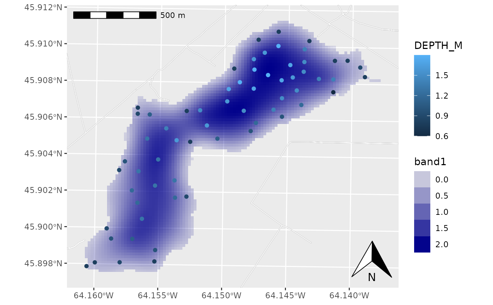

Turn a spatial object into a ggplot2 layer
layer_spatial(data, mapping, ...) annotation_spatial(data, mapping, ...) # S3 method for default layer_spatial( data, mapping = aes(), inherit.aes = FALSE, sf_params = list(), ... ) # S3 method for default annotation_spatial( data, mapping = aes(), inherit.aes = FALSE, sf_params = list(), ... ) shadow_spatial(data, ...) # S3 method for default shadow_spatial(data, ...)
| data | An object that can be coerced to an sf object using st_as_sf. |
|---|---|
| mapping | A mapping, created using aes. |
| ... | Passed to geom_sf |
| inherit.aes | Inherit aesthetics from ggplot()? |
| sf_params | Passed to st_as_sf. |
A ggplot2 layer.
library(ggplot2) load_longlake_data() ggplot() + # annotation_spatial() layers don't train the scales, so data stays central annotation_spatial(longlake_roadsdf, size = 2, col = "black") + annotation_spatial(longlake_roadsdf, size = 1.6, col = "white") + # raster layers train scales and get projected automatically layer_spatial(longlake_depth_raster, aes(alpha = stat(band1)), fill = "darkblue") + scale_alpha_continuous(na.value = 0) + # layer_spatial() layers train the scales layer_spatial(longlake_depthdf, aes(col = DEPTH_M)) + # spatial-aware automagic scale bar annotation_scale(location = "tl") + # spatial-aware automagic north arrow annotation_north_arrow(location = "br", which_north = "true")